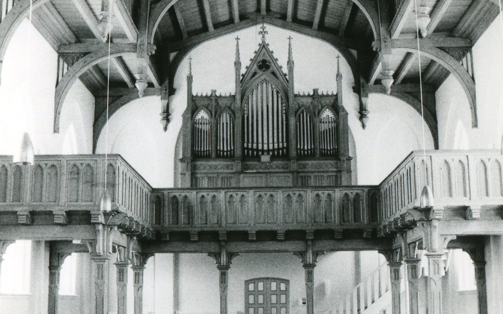

Heilig-Kreuz-Kirche Bevern · Heinrich Röver & SöhneA century of sound. Preserved.
The Röver organ in Heilig-Kreuz-Kirche Bevern is a late-romantic instrument built by Heinrich Röver & Söhne, one of the most respected German organ builders of their era. Its pipes carry the characteristic warmth and clarity of the late 1800s, a tonal ideal that shaped sacred music for generations.
Like many historic church organs, it exists in a fragile state: aging mechanical components, limited restoration funds, and a shrinking community of specialists who understand instruments of this period. Without intervention, sounds like these can be lost within a generation.
The Digital Heritage Organ project was conceived to change that: to capture the full sonic identity of this instrument with professional multisampling techniques and make it accessible to artists and researchers worldwide, permanently and without barriers.
Recorded on-location in Bevern with multiple microphone positions, the library documents all 17 registers across Hauptwerk, Schwellwerk, and Pedal. Every pipe row, every tonal color, preserved with fidelity.
The final release also incorporates the authentic acoustic signature of the church itself. Using specialized measurement technology, the natural reverb of Heilig-Kreuz-Kirche was captured as a convolution impulse response and integrated directly into the instrument, so every note you play breathes with the same room the organ has inhabited for over a century.